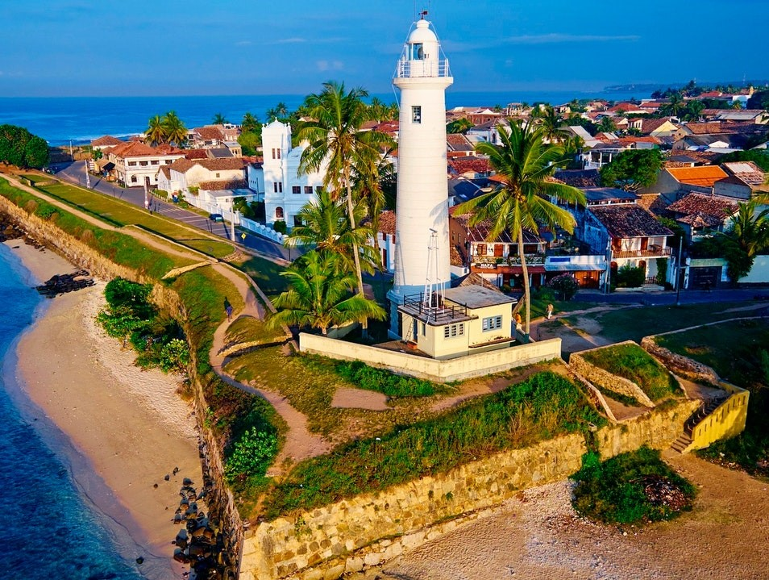

7 Days in Sri Lanka Itinerary: Places You Can't Miss
Sri Lanka is an island surrounded by Beautiful beaches, Elephant parks, Buddhist Monuments, ancient ruins, the ability to transition from one climate to another in a very short time. Friendly hospitality, Come and enjoy yourself. Even if you only have one week to spare, this budget-friendly island nation will dazzle you with its ever-changing landscapes and staggering biodiversity. Covering same of the country’s can't-miss highlights, read on for a seven-day Sri Lanka itinerary that offers a taste of its compelling cities, mountainous interior, and alluring coastline.
Our tour itinerary is as follows,
- Day 1 – BIA – Colombo (36km / 46min)
- Day 2 – Colombo – Dambulla /Sigiriya (163km/ 3h 36min)
- Day 3 – Dambulla - Kandy (88km / 2h 38min)
- Day 4 – Kandy - Ella (137km / 3h 38min)
- Day 5 – Ella - Mirissa (180km / 3h 19min)
- Day 6 – Mirissa – Koggala / Galle (21km / 30min)
- Day 7 – Galle - BIA (151km / 2h 11min)
(FYI - Above time might be subjected to changes due to traffic jam and such other factors.)
Day 1 - BIA to Colombo
Leave from BIA – 9.00a.m.
Reach to Colombo – 9.50a.m.
Home to the country's largest international airport, Colombo is Sri Lanka's primary gateway and the perfect place to take a quick breather and recuperate after a long flight. If you are keen to do a bit of sightseeing before moving onto the country's stunning hill country region, visit the National Museum of Colombo, Vihara Mahadevi Park, and the Old City Hall for an introduction to the city's top sights.
Top thing to do in Colombo:
- Admire the city's impressive colonial-style buildings, including the Old City Hall and Dutch Period Museum
- Escape the hustle and bustle at Vihara Mahadevi Park
- Indulge in fresh seafood at the legendary Ministry of Crab
- Walk along the promenade at Galle Face Green
Overnight stay - Galle Face Hotel
Day 2 - Colombo to Dambulla / Sigiriya
Leave from Colombo – 6 a.m.
Reach to Dambulla – 9.45a.m.
Dambulla Cave Temple

Dambulla cave temple is one of the world heritages sites and it is the largest and best-preserved cave temple complex in Sri Lanka. This has a huge cultural/historical and a religious value including its major attractions spread over 5 caves with the temple where visitors could see Buddha Statues, Ancient Cave paintings and designs, several statues among major those major attractions.
Traditional Village Tour Dambulla
uring this village tour in Nilagama village, a traditional bull cart will be provided to ride around the village and to enjoy the environment, local community, animals, birds, paddy fields and everything included in a traditional Sri Lankan village. At the end of the cart tour, a Sri Lankan buffet will be served for your lunch in a traditional mud house. So, it would be an opportunity for you to encounter authentic local life, culture, and vibrant hospitality.
Sigiriya rock fortress
This is an ancient rock fortress located about 15 km from Dambulla which is also listed as a world heritage site by UNESCO. The fortress was built by an ancient king called Kashyapa, where he built his palace on the top of the rock with a wonderful water garden with fountains and ponds which work even today with the sufficient rainfall. So, this is an undoubtably one of the most advanced ancient fortresses one should watch.
Overnight stay - Jetwing Villa Uyana
Day 3 - Dambulla to Kandy
Leave Dambulla – 6.00 a.m.
Reach Kandy – 8.40 a.m.
Temple of Tooth Relic
Temple of Tooth Relic is a Buddhist temple in Kandy, and it is also a world-renowned place for worship where the left canine tooth of Lord Buddha is placed. This is a holy place which is venerated by local and foreign devotees every day and this was also named as a world heritage site in 1988 by UNESCO.
National Museum of Kandy
building has established during the era of last king of Sri Lanka, Sri Wikrama Rajasinghe and was then known as ‘Palle Wahala’. This museum has over 5000 museum objects which are depicting various aspects of historical and cultural events of Kandyan period.
Ceylon Tea Museum
This is located next to the temple of tooth relic, in part of former royal palace of Kandy. This building has established during the era of last king of Sri Lanka, Sri Wikrama Rajasinghe and was then known as ‘Palle Wahala’. This museum has over 5000 museum objects which are depicting various aspects of historical and cultural events of Kandyan period.
Royal botanical garden – Peradeniya
This is located about 5.5km to the west of the city of Kandy and it attracts 2 million visitors annually and its garden includes more than 4000 species of plants, including flowers like orchids, spices, medicinal plants, palm trees and various other kinds of plants as well. National herbarium of Sri Lanka is also situated attached to this garden as well.
Gadaladeniya Temple
This is an ancient Buddhist temple situated in Pililmathalawa, Kandy and a place with a great historical and cultural value and comprised with two shrines where visitors can see statues, ancient Kandyan era paintings and designs. So, it is also one of the best places to visit to in Kandy.
Overnight stay –Kandy City Hotel – This is one of the best hotels in Kandy, conveniently placed by Kandy Railway station with tastefully furnished rooms fitted with private bathrooms and all other facilities for a convenient stay.
Day 4 - Kandy to Ella
Leave Kandy – 6.00 a.m.
Reach Ella – 9.40 a.m.
Nine Arch Bridge
This bridge was built in 1921, entirely out of brick, rock and cement with no metal used in its construction and this is flanked by verdant forests and tea plantations, and it is standing proudly across the valley below. On misty days, low clouds hang in the valley, giving the whole area a moody, mystical feel. Trains tend to pass this bridge at 9:30 am, 11:30 am, 03:30 pm, 04:30 pm and 05:30 pm, where tourists could capture beautiful photographs there. Visitors can caught the train slowly makes its way across the bridge in their cameras at the above-mentioned times and it will be a wonderful sight as well.
Ella rock hike/ Flying Ravana
Spectacular views can be caught in your camera and can be viewed through your eyes if you hike up this famous Ella Rock. Tourists won’t miss out of views of Ella area, little Adam’s peak, and Ella gap if they are able to reach the summit of the rock. It takes about two hours to this hike through a clearly marked path
Either 1 activity can be chosen as per your preference, from followings…
Eat and chill in Ella Town
If you are keen on experiencing or exploring some evening snacks and beverages in the city after the hike of Ella Rock, in the evening, the best place to take it all in is at Café chill located right in the center of Ella Town. Here, you have the ability to indulge in a relaxed bar with a mug of beer or having an evening cocktail
Evening Sri Lankan traditional cooking session and Spice garden watch
This is a cooking school and a spice garden run by a person called Lakna, by himself out of purpose-built kitchen area at his family home using traditional clay pots over a fire.so, this will be an authentic Sri Lankan cooking experience which a tourist could get in Ella.
Cost – 2000 LKR per person
Overnight stay –Ella 100 View Cottage
This hotel is located in Ella, within 3.6 km from nine arch bridge, with all facilities included for a comfortable and relaxing stay. This is actually one of the best and convenient places you could stay in Ella at a budgeted price.
Day 5 - Ella to Mirissa
Leave Ella – 6.00 a.m.
Reach Mirissa – 9.30 a.m.
Secret beach – Mirissa
This is a beautiful beach area with small pond like spot in the beach which is been created from surrounding rocks and these rocks protect the beach from the large swells and rough ocean and make a perfect place for relaxing. You can get a sunbathing chair from a nearby restaurant for 500 LKR and you are able to sunbathe under the morning sun.
Whale & Dolphin Watching - Mirissa beach
Whale and Dolphin watching in Mirissa in one of the most exciting water activities you can do during your holiday in Sri Lanka. Often spotted blue whales are the biggest animals in the world and Mirissa is the best place for whale and dolphin watching tour in Sri Lanka.
Stilt Fishermen
Stilt fishing is a traditional fishing method in Sri Lanka and here fishermen sit on wooden poles and dangle a line in the water constantly flicking it up and down. So, this is a unique attraction that you could experience in down south region of Sri Lanka which you won’t see it anywhere in the world.
Coconut tree Hill – Mirissa
This is a beautiful hill perched into the Indian Ocean lined with sky high coconut trees and this has been very famous spot for Instagram photos among tourists. You could enjoy the beautiful view of sunset from this place in the evening and you are able to relax and capture scenic photographs by visiting this place in the evening.
Dondra Light House
This is located in 30 minutes from Mirissa and it is another attraction located in this area. This is the southernmost point of Sri Lanka where it is surrounded by beautiful beaches and coconut trees.
Overnight stay – Glamour hotel – (Mirissa)
This is a beautiful hotel situated in Mirissa with all the needed facilities such as comfortable rooms, swimming pool, bar and many more other components where you could experience a convenient and comfortable stay at a budget price.
Day 6 - Mirissa to Galle
Leave Mirissa – 8.00 a.m.
Reach Hikkaduwa – 8.30 a.m.
Sea Turtle Conservation Project – Koggala
The 'Sea Turtle Farm & Hatchery' is a non-profitable organization which is maintained for the survival of Sea Turtles for the next generation. The 'Turtle Farm' is situated in Koggala near to the beautiful beach. That is 12km from the Galle - Matara main road. The center was started in 2010 and up to now we have released more than 100,000 turtles.
Hikkaduwa Beach - Water sports
The beaches in Hikkaduwa have been attracting tourist since the 1960s when it was first discovered. The beach stretches on spanning over kilometers and hosts many fun activities to keep the tourists engaged. These water sports include snorkeling and scuba diving for the adventure seekers. The clear waters beckon the nature lovers who wish to take a dip inside the waters to witness the vibrant of fishes and large turtles. The islets along the beach breed pocket of wildlife and are a wonderful way to interact with it.
Galle – Fort
You'll know you've arrived in Galle when you start feeling as though you've temporarily transported from Asia to Europe; this seaside city has a distinctly European flair, thanks to its narrow, cobbled street and Dutch colonial building.
Depicting a blend of European architectural styles and South Asian traditions, the UNESCO- listed Galle Fort is one attraction you can't miss here. Ste aside an afternoon to walk along the fort's outer walls and explore its historic center. The Galle Lighthouse, Galle National Museum, and the Old Dutch Hospital - which is one of the oldest buildings in Galle Fort - are only a few of the top highlights you'll find within this fortified city.
In the evening do not forget to get a walking tour experience on the most beautiful fort wall
Overnight stay –Galle Fort Hotel
Day 7 - Galle to BIA
Leave Galle – 11.00a.m.
Reach BIA – 13.15p.m.
A morning tour to buy souvenir and local handcrafts and spices from the shops on Pedder Street in Galle Fort.
Transfer to BIA for departure